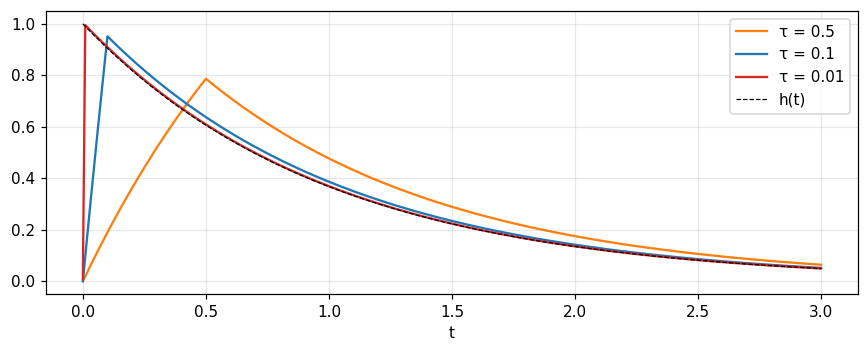

Ký hiệu xung: \delta, tính chất sàng, shah và hàm suy rộng
Xung là dãy xung ngắn diện tích 1 mà chi tiết dạng không quan trọng: tính chất sàng, chuỗi xung shah, đạo hàm của xung, hàm rỗng và cơ sở hàm suy rộng.
Ký hiệu xung: \delta, tính chất sàng, shah và hàm suy rộng
Giải thích \delta(x) như giới hạn của dãy xung diện tích 1, và vì sao dạng xung không quan trọng.
Dùng tính chất sàng, tỉ lệ \delta(ax), và cẩn thận với x\delta(x).
Dùng \text{III}(x) cho lấy mẫu và nhân bản, và cặp xung chẵn, lẻ cho sai phân.
Tính với \delta', \delta'', hàm rỗng và xung nhiều chiều.
Hiểu hàm suy rộng là lớp các dãy chính quy, và đạo hàm định nghĩa bằng tích phân từng phần.
Dùng nút, chấm tròn hoặc phím ← → để chuyển slide.
PHẦN 1/5
01
Từ xung vật lý tới ký hiệu \delta
Bối cảnh: Khối điểm, điện tích điểm, lực tập trung là các thực thể quen thuộc trong vật lý dù không tồn tại thật.
Vướng mắc: Vì sao dùng thứ không tồn tại, và nói "hàm bằng vô cùng tại gốc" có nghĩa gì?
Giải pháp: Coi xung là dấu hiệu tắt cho một xung ngắn, diện tích 1, mà chi tiết dạng không đo được.
Xung là khái niệm về tích phân, không về dạng
Đáp ứng của mạch RC với các xung khác dạng
Các dãy xác định \delta và bậc thang
1/5 · Từ xung vật lý tới ký hiệu \delta
Xung: chỉ tích phân quan trọng
Cần một ký hiệu cho xung mạnh, diện tích 1, ngắn tới mức thiết bị đo có độ phân giải cho trước không phân biệt được nó với xung ngắn hơn nữa. Cơ học gọi là "xung lượng". Thuộc tính quan trọng là tích phân của nó; chi tiết dạng không quan trọng (Bracewell, tr. 74).
1/5 · Từ xung vật lý tới ký hiệu \delta
Lịch sử ký hiệu \delta(x)
Ý tưởng đã có hơn một thế kỷ trong giới toán: van der Pol và Bremmer (1955) dẫn các ví dụ từ Hermite, Cauchy, Poisson, Kirchhoff, Helmholtz, Kelvin và Heaviside. Ký hiệu \delta(x) do G. Kirchhoff dùng đầu tiên, rồi Dirac đưa vào cơ học lượng tử năm 1927 (tr. 74).
1/5 · Từ xung vật lý tới ký hiệu \delta
Những thứ không tồn tại nhưng hữu ích
Khối điểm, điện tích điểm, nguồn điểm, lực tập trung, nguồn đường, điện tích mặt là các thực thể quen thuộc trong vật lý, dù không tồn tại. Giá trị khái niệm của chúng nằm ở chỗ đáp ứng xung (tác dụng gắn với xung) có thể không phân biệt được, với thiết bị đo cho trước, so với đáp ứng của một xung có thật (tr. 74).
1/5 · Từ xung vật lý tới ký hiệu \delta
Định nghĩa: không phải một hàm
Ta muốn viết \delta(x)=0 với x\ne0 và \int\delta=1, nhưng ký hiệu xung không biểu diễn một hàm theo nghĩa giải tích. Dirac gọi nó là "hàm không chính thức" và tích phân ở trên chỉ có nghĩa khi nêu quy ước diễn giải. Ở đây nó nghĩa là giới hạn của \int\tau^{-1}\Pi(x/\tau)dx khi \tau\to0 (tr. 74 đến 75).
\tau^{-1}\Pi(x/\tau)xung chữ nhật cao \tau^{-1}, đáy \tau, diện tích 1
1/5 · Từ xung vật lý tới ký hiệu \delta
Đáp ứng của mạch lọc RC: dạng xung dần không quan trọng
Cho xung điện áp vào bộ lọc thông thấp, đáp ứng quá độ dần ổn định khi xung ngắn dần, và khi đó không phụ thuộc dạng xung vào, vì thành phần tần số cao phân biệt các xung gần như không gây đáp ứng (tr. 75). Với mạch RC có h(t)=e^{-t}H(t), ba xung diện tích 1 (chữ nhật, tam giác, hai xung nhỏ) rộng \tau: tại t=1 độ chênh giữa ba đáp ứng là 0.009 khi \tau=0.5, 0.0003 khi \tau=0.1 và 0 khi \tau=0.01.

Hình 1. Đáp ứng của mạch RC với xung chữ nhật diện tích 1 rộng τ: khi τ giảm, đường cong (màu) áp sát đáp ứng xung h(t) = e^{−t} (nét đứt).
1/5 · Từ xung vật lý tới ký hiệu \delta
Mối liên hệ giữa \delta và bậc thang
Vì \int_{-\infty}^x\delta(x')dx' bằng 1 khi x>0 và 0 khi x<0, ta có \int_{-\infty}^x\delta=H(x). Để hiểu đúng, thay \delta bằng dãy \tau^{-1}\Pi(x/\tau): các tích phân là hàm dốc-bậc thang (hình 5.1), rồi cố định x và cho \tau\to0 (tr. 75 đến 77). Tại x=0.1: \tau=0.5 cho 0.7, \tau=0.1 cho 1; tại x=-0.1: 0.3 và 0.
Bậc thang không có đạo hàm tại gốc, nên phát biểu này là dấu tắt cho: đạo hàm của một dãy hàm khả vi tiến về H(x) là một dãy xác định phù hợp cho \delta(x). Các hàm dốc-bậc thang của hình 5.1 khả vi và tiến về H; bước nhảy luôn bằng 1 nên diện tích dưới mỗi đạo hàm bằng 1, đủ điều kiện làm dãy xung đơn vị (tr. 77).
1/5 · Từ xung vật lý tới ký hiệu \delta
Nhiều dãy khác nhau xác định cùng một \delta
Bracewell liệt kê các dãy tiến về 0 qua giá trị dương của \tau (tr. 77 đến 78): xung chữ nhật đặt lệch (cạnh trái tại gốc, hay dùng trong mạch điện có công tắc), Gauss (mọi đạo hàm đều tồn tại), tam giác (liên tục, bằng 0 ngoài |x|<\tau), \tau^{-1}\text{sinc}(x/\tau) (không tắt dần nhưng vẫn dùng được), đường cộng hưởng \tau/[\pi(x^2+\tau^2)] (tắt chậm), và hàm trơn có giá compact. Bảng sau cho \int f\,\delta_\tau\,dx với f=\cos x+\tfrac12\sin2x (nên f(0)=1):
Dạng xung
\tau=0.1
\tau=0.01
chữ nhật đặt giữa
0.9996
1
chữ nhật cạnh trái tại gốc
1.0482
1.005
Gauss
0.9992
1
tam giác
0.9992
1
sinc
0.9998
1
Lorentz (cộng hưởng)
0.9048
0.99
Mọi dạng đối xứng đều tiến về 1; dạng cạnh trái tiến về f(0+) ở chỗ gián đoạn nên hơi khác khi \tau chưa nhỏ.
1/5 · Từ xung vật lý tới ký hiệu \delta
Tự kiểm tra phần 1
Vì sao mạch RC không phân biệt được các xung vào rất ngắn có dạng khác nhau?
Vì sao "đạo hàm của bậc thang là xung" chỉ là dấu tắt?
Dãy nào trong bảng trên tiến về giá trị khác 1 khi \tau chưa nhỏ, và vì sao?
Gợi ý: vì thành phần tần số cao gần như không gây đáp ứng; vì bậc thang không có đạo hàm tại gốc; dạng chữ nhật cạnh trái, vì nó sàng f tại lân cận bên phải.
PHẦN 2/5
02
Tính chất sàng, tỉ lệ và chuỗi shah
Bối cảnh: Muốn tính với \delta như với một hàm bình thường, ta cần các quy tắc chính xác.
Vướng mắc: Vài quy tắc trông hiển nhiên lại có bẫy: \delta(ax), x\delta(x), \text{III}(ax).
Giải pháp: Tính chất sàng là quy tắc trung tâm, và shah nhân rộng nó ra một chuỗi xung đều.
Tính chất sàng và tích chập với \delta
Tỉ lệ \delta(ax) và x\delta(x)=0 có điều kiện
Chuỗi xung shah: lấy mẫu và nhân bản
2/5 · Tính chất sàng, tỉ lệ và chuỗi shah
Tính chất sàng
Thay \delta bằng \tau^{-1}\Pi(x/\tau), nhân với f, lấy tích phân rồi cho \tau\to0: diện tích phía dưới xấp xỉ \tau^{-1} nhân phần bóng, vốn cao trung bình gần f(0) và rộng \tau, nên tiến về f(0). Phép toán "sàng" ra một giá trị duy nhất của f. Dạng xung không quan trọng, chỉ tích phân có ý nghĩa (tr. 79).
Viết dưới dạng tích chập, \delta(x)*f(x)=f(x)*\delta(x)=f(x). Nếu f có bước nhảy tại x=0, tích phân sàng có giá trị giới hạn \tfrac12[f(0+)+f(0-)], nên tổng quát hơn ta viết \delta*f=\tfrac12[f(x+)+f(x-)]; khác f chỉ bởi hàm rỗng (tr. 80). Số đo với f=e^{-x}H(x): dãy đặt giữa cho 0.5, dãy cạnh trái cho 1 tại chỗ nhảy.
Dãy chữ nhật không đối xứng \tau^{-1}\Pi[(x-\tau/2)/\tau] có tính chất sàng ra f(x+). Tại điểm gián đoạn, dùng dãy này cho kết quả khác. Trong phân tích quá độ, nơi gián đoạn ở thời điểm đóng công tắc t=0 rất phổ biến, việc chọn dãy có vẻ cho đáp số khác, nhưng khác biệt chỉ tức thời (tr. 80).
2/5 · Tính chất sàng, tỉ lệ và chuỗi shah
Tỉ lệ: \delta(ax)=|a|^{-1}\delta(x)
Nén thang x đi a lần làm diện tích của các xung vốn bằng 1 giảm đi, nên cường độ xung giảm |a| lần. Dấu môđun bao hàm tính chất \delta(-x)=\delta(x) (tr. 80). Số đo: \int f\,\tau^{-1}\Pi(3x/\tau)dx với \tau=0.01 bằng 0.3333, gần f(0)/3.
Nhân với hàm liên tục: f(x)\delta(x)=f(0)\delta(x)
Nếu f liên tục tại 0 thì f(x)\delta(x)=f(0)\delta(x) (tr. 81). Kiểm số: kiểm bằng hàm thử g=e^{-x^2} và dãy Gauss \tau=0.01, \int f\delta_\tau g\,dx = 1, đúng f(0)g(0)=1.
2/5 · Tính chất sàng, tỉ lệ và chuỗi shah
x\delta(x)=0: đúng, nhưng có điều kiện
Từ tính chất sàng với f=x, \int x\delta(x)dx=0, và người ta viết x\delta(x)=0. Nhưng nhìn các hàm trước giới hạn, phương trình này che giấu một thành phần khác không gợi nhớ hiện tượng Gibbs: \lim_{\tau\to0}[x\tau^{-1}\Pi(x/\tau)]=0 với mọi x, nhưng cực đại của nó luôn là \tfrac12 và cực tiểu -\tfrac12 (tr. 81). Đo: cực đại 0.5 với \tau=0.1 lẫn \tau=0.001.
2/5 · Tính chất sàng, tỉ lệ và chuỗi shah
Chuỗi xung shah \text{III}(x)
Chuỗi vô hạn các xung đơn vị cách nhau 1 (hình 5.4). Mọi dè dặt của \delta đều áp dụng, và nhiều hơn: vô số gián đoạn vô hạn và tích phân vô hạn không hội tụ, nên mọi điều kiện tồn tại biến đổi Fourier đều bị vi phạm; nhưng nó lại rất hữu ích và dễ thao tác (tr. 81 đến 82). Các tính chất hiển nhiên: tuần hoàn chu kỳ 1, chẵn, \text{III}(x-\tfrac12)=\text{III}(x+\tfrac12).
Nhân f(x) với \text{III}(x) lấy mẫu f ở các khoảng đơn vị: \text{III}(x)f(x)=\sum f(n)\delta(x-n). Thông tin trong các khoảng giữa các số nguyên bị mất, nhưng giá trị tại số nguyên được giữ. Shah dùng cho giản đồ bức xạ dàn ăng-ten, nhiễu xạ cách tử, quét raster trong tivi và radar, điều chế xung, lấy mẫu dữ liệu, chuỗi Fourier và bảng số (tr. 82). Tổng mẫu \sum_nf(n) với f=e^{-\pi x^2} là 1.0864.
\text{III}*f=\sum f(x-n): hàm f xuất hiện lặp lại (bản sao) ở các khoảng đơn vị về cả hai phía; nếu f rộng hơn một đơn vị thì các bản sao chồng lấn (hình 5.6). Tính hai mặt (lấy mẫu và tuần hoàn) không phải ngẫu nhiên: \text{III} là biến đổi Fourier của chính nó (trong giới hạn), nên hữu ích gấp đôi (tr. 82 đến 83). Với f=e^{-\pi x^2}, (\text{III}*f)(0.5) = 0.9136, tính bằng tổng trực tiếp và bằng chuỗi Fourier \sum(-1)^ke^{-\pi k^2} đều ra cùng số.
Nhân bản
\text{III}*f(x)=\sum_{n=-\infty}^{\infty}f(x-n)
2/5 · Tính chất sàng, tỉ lệ và chuỗi shah
Cái bẫy \text{III}(ax): cường độ xung
Nén shah theo x hai lần thành \text{III}(2x) làm các xung sát gấp đôi, nhưng để nhất quán đại số, cường độ giảm cùng hệ số: \text{III}(ax)=|a|^{-1}\sum\delta(x-n/a). Nếu kéo giãn để khoảng cách là X thì \text{III}(x/X) chưa có cường độ đơn vị: xung đơn vị cách nhau X là X^{-1}\text{III}(x/X) (tr. 83). Số đo với f=e^{-\pi x^2} (diện tích 1): \sum f(nX) = 1.0864 (X=1) và 2 (X=0.5, gấp đôi vì thiếu hệ số X), còn X\sum f(nX) = 1 (X=0.5), đúng diện tích.
Vì \text{III}\supset\text{III}, tổng các mẫu của f bằng tổng các mẫu của F: \sum f(n)=\sum F(k). Với f=e^{-\pi x^2/4} có F=2e^{-4\pi s^2}: vế trái 2.000014 và vế phải 2.000014, trùng tới sai số làm tròn. Đây là công thức tổng Poisson mà chương 10 sẽ dùng cho định lý lấy mẫu.
Chúng quan trọng vì liên hệ biến đổi với cosin và sin: \mu(x)\supset\cos\pi s, \cos\pi x\supset\mu(s), và \nu(x)\supset i\sin\pi s, \sin\pi x\supset i\nu(s) (tr. 84). Notebook: biến đổi số của \mu tại s=0.3 là 0.5878, đúng \cos0.3\pi.
3/5 · Cặp xung chẵn, lẻ và đạo hàm của \delta
Cặp chẵn nhân đôi hàm
Tích chập với \mu cho \mu*f=\tfrac12f(x+\tfrac12)+\tfrac12f(x-\tfrac12), tức trung bình hai bản dịch (hình 5.8). Chuẩn hóa để diện tích bằng 1 có lợi thế; đôi khi người ta muốn hai xung đơn vị (tr. 84). Với f=e^{-\pi x^2} tại x=0: 0.4559.
3/5 · Cặp xung chẵn, lẻ và đạo hàm của \delta
Sai phân hữu hạn bằng cặp lẻ
Định nghĩa sai phân hữu hạn \Delta f(x)=f(x+\tfrac12)-f(x-\tfrac12), ta có \Delta f=2\nu*f, tức toán tử \Delta=2\nu* (tr. 84 đến 85). Kiểm số: với f=\sin x, \Delta f(0)=2\sin\tfrac12 = 0.9589; với f=e^{-\pi x^2}, biến đổi của \Delta f là 2i\sin(\pi s)F(s), độ lớn 1.2195 tại s=0.3 bằng cả tích phân số lẫn công thức.
\delta'(x)=\frac{d}{dx}\delta(x) gợi hình ảnh một lưỡng cực vô cùng nhỏ trong tĩnh điện, một hình ảnh quen thuộc và dễ dùng. Cách viết \delta' chuyển sự dễ dàng đó sang toán, nhưng ta không thể bắt một hàm vọt lên vô cùng ngay trái gốc, xuống âm vô cùng ngay phải, và bằng 0 ở mọi chỗ khác. Ta cũng muốn viết \delta'(0)=0 (tr. 85).
3/5 · Cặp xung chẵn, lẻ và đạo hàm của \delta
Diễn giải chặt chẽ: đạo hàm của dãy xung
Ta lui về dãy xung như với \delta và xét các đạo hàm của chúng (hình 5.9). Ví dụ \int\delta'(x)dx=0 là dấu tắt của \lim\int[\text{đạo hàm của xung}]dx=0. Hình dạng xung chính xác không quan trọng, thậm chí xung chữ nhật cũng được, nhưng trong công việc sau, xung trơn có thể có lợi (tr. 85 đến 86). Tính chất sàng đạo hàm: \int\delta'(x)f(x)dx=-f'(0); với dãy Gauss \tau=0.05 và f=\cos x+\tfrac12\sin2x cho -0.9992, trùng -\int\delta_\tau f' (lệch 6.7e-16).
Các tính chất đi kèm (tr. 86): \int x\delta'(x)dx=-1, \int|\delta'(x)|dx=\infty, \delta'(-x)=-\delta'(x), x\delta'(x)=-\delta(x), và f(x)\delta'(x)=f(0)\delta'(x)-f'(0)\delta(x). Số đo: \int x\delta'_\tau dx = -1; \int|\delta'_\tau|dx = 20 khi \tau=0.1 và 200 khi \tau=0.01, tăng như 2/\tau: không có giới hạn hữu hạn.
Với đạo hàm cấp cao (tr. 87): \int\delta''(x)dx=0, \int x^2\delta''(x)dx=2, x^n\delta^{(n)}(x)=(-1)^nn!\,\delta(x), và \int\delta^{(n)}(x)f(x)dx=(-1)^nf^{(n)}(0). Số đo: \int x^2\delta''_\tau dx = 2; với f=\cos x+\tfrac12\sin2x, \int\delta''f = -1, đúng f''(0)=-1.
Sàng đạo hàm bậc n
\int\delta^{(n)}(x)\,f(x)\,dx=(-1)^n f^{(n)}(0)
3/5 · Cặp xung chẵn, lẻ và đạo hàm của \delta
Hàm rỗng
Hàm rỗng nổi tiếng vì biến đổi Fourier bằng 0 mà bản thân không đồng nhất bằng 0. Định nghĩa: f rỗng nếu \int_a^bf\,dx=0 với mọi a,b. Định lý Lerch: nếu hai hàm có cùng biến đổi thì hiệu của chúng là hàm rỗng. Ví dụ là \delta^{\circ}(x), bằng 0 khi x\ne0 và 1 khi x=0; nó mô tả dòng điện qua điện trở nối tiếp tụ điện từ một acquy khi điện dung tiến về 0 (tr. 87). Số đo: diện tích của một điểm cao 1 trên lưới bước 10^{-3} và 10^{-6} là 1e-03 và 1e-06, tiến về 0.
Bậc thang và hàm rỗng
H(x)=\hat H(x)+\tfrac12\,\delta^{\circ}(x)
3/5 · Cặp xung chẵn, lẻ và đạo hàm của \delta
Tự kiểm tra phần 3
Tính \int\delta'(x)\cos x\,dx và \int\delta''(x)\cos x\,dx.
Vì sao \int|\delta'|=\infty dù \int\delta'=0?
Hàm rỗng có biến đổi Fourier là gì?
Gợi ý: 0 và -1; vì hai nửa dương và âm đều dài vô hạn theo 1/\tau; bằng 0.
PHẦN 4/5
04
Xung nhiều chiều
Bối cảnh: Vật lý cần khối lượng điểm trên mặt phẳng, điện tích điểm trong không gian, dàn ăng-ten hai chiều.
Vướng mắc: Ký hiệu một chiều có mở rộng tự nhiên không, và giữ được tính tự biến đổi của shah không?
Giải pháp: Có: tích của các xung một chiều, và các ký hiệu ghép như "giường đinh" ^2\text{III}.
\delta(x,y) và \delta(x,y,z)
Giường đinh, hàng đinh và cách tử
Đạo hàm của xung là dipole, tứ cực
4/5 · Xung nhiều chiều
Xung hai chiều và ba chiều
^2\delta(x,y) mô tả phân bố áp suất trên mặt phẳng khi đặt một lực tập trung đơn vị tại gốc; ^3\delta(x,y,z) mô tả mật độ điện tích trong một thể tích chứa một điện tích đơn vị tại (0,0,0). Tính chất được thiết lập bằng dãy như \tau^{-2}\Pi(x/\tau)\Pi(y/\tau) có thể tích 1 (tr. 89).
Với r^2=x^2+y^2, ^2\delta(x,y)=\delta(r)/\pi r. Trong ba chiều, ^3\delta(x,y,z)=\delta(x)\delta(y)\delta(z)={}^2\delta(x,y)\delta(z), và trong toạ độ trụ và cầu có các dạng tương ứng (tr. 89 đến 90). Số đo: tích phân 2\pi r\,dr của \delta_\tau(r)/\pi r với dãy Gauss trên mặt phẳng (\tau=0.1) bằng 1.
4/5 · Xung nhiều chiều
Giường đinh ^2\text{III}(x,y)
Để mô tả các dàn hai chiều, dùng ký hiệu giường đinh (hình 5.12). Nó tích được: ^2\text{III}(x,y)=\text{III}(x)\text{III}(y), tuần hoàn kép, và f(x,y)\,{}^2\text{III}=\sum\sum f(m,n)\,{}^2\delta(x-m,y-n): dữ liệu hai chiều tra bảng và hệ số của chuỗi Fourier kép (tr. 90 đến 91). Chập với nó cho bản sao hai chiều, như dàn ăng-ten giống hệt nhau. Số đo: \sum\sum e^{-\pi(m^2+n^2)} = 1.1803 bằng bình phương của tổng một chiều 1.0864.
Hai phân bố hai chiều quan trọng không cần ký hiệu mới: hàng đinh \text{III}(x)\delta(y) và cách tử \text{III}(x) (hình 5.14). Chúng tạo thành một cặp biến đổi Fourier hai chiều, tiện cho bàn về nhiễu xạ ánh sáng qua một hàng lỗ kim hay qua cách tử nhiễu xạ (tr. 91).
4/5 · Xung nhiều chiều
Đạo hàm của xung: dipole và tứ cực
Diễn giải bằng đạo hàm của xung, nhiều dạng là phân bố điện tích quen thuộc. \delta'(x) trên mặt phẳng (x,y) là phân bố mô men lưỡng cực đường nằm trên trục y; trong không gian ba chiều là phân bố mô men lưỡng cực mặt trên mặt phẳng (y,z). Lưỡng cực đơn tại gốc, mô men đơn vị theo x, là -\delta'(x)\delta(y)\delta(z). Tứ cực đơn là \delta''(x)\delta(y)\delta(z) (tr. 91 đến 92).
Bức xạ tứ diệp (cỏ ba lá) của một anten có giản đồ mô tả bởi \delta'(x)\delta'(y) trên mặt phẳng (x,y). Mọi biểu thức ký hiệu này có thể tin cậy đưa vào phương trình Maxwell, phương trình sóng, phương trình Poisson và các phương trình vi phân cơ bản khác (tr. 92).
4/5 · Xung nhiều chiều
Tự kiểm tra phần 4
Viết ^2\delta(2x,3y) theo ^2\delta(x,y).
^2\text{III}(x,y) liên hệ thế nào với \text{III}(x) và \text{III}(y)?
Xung nào biểu diễn một lưỡng cực đơn vị hướng theo x?
Gợi ý: \tfrac16\,{}^2\delta(x,y); là tích; -\delta'(x)\delta(y)\delta(z).
PHẦN 5/5
05
Hàm suy rộng: cơ sở chặt chẽ
Bối cảnh: Ký hiệu xung rất tiện, nhưng ta vẫn muốn nó có nền chặt chẽ.
Vướng mắc: Khó khăn: \delta không phải hàm, và ta còn muốn cộng chúng, lấy đạo hàm chúng.
Giải pháp: Định nghĩa hàm suy rộng như lớp các dãy chính quy của hàm trơn, và định nghĩa phép toán bằng tích phân từng phần.
Vì sao cần: gián đoạn, dòng xoay chiều thuần túy, độ phân giải hữu hạn
Hàm trơn tuyệt đối, dãy chính quy
Đại số và đạo hàm của hàm suy rộng
5/5 · Hàm suy rộng: cơ sở chặt chẽ
Vì sao cần hàm suy rộng
Ký hiệu xung và các tổ hợp như \text{III}, \mu đem lại nhiều tiện lợi, trong đó có việc cho đạo hàm của hàm có gián đoạn đơn giản. Thông thường ta nói đạo hàm không tồn tại; ký hiệu xung cho phép chứa các gián đoạn đó (Bracewell, tr. 92). Dùng "symbol" để nhắc rằng đây không phải hàm.
5/5 · Hàm suy rộng: cơ sở chặt chẽ
Dòng xoay chiều thuần túy: vô hạn xa xôi là tiện lợi
Dòng xoay chiều thuần túy là biến thiên điều hòa vĩnh cửu, không tạo được. Nhưng đáp ứng với biến thiên điều hòa trên một khoảng rồi bằng 0 bên ngoài có thể làm độc lập với thời điểm bật tới một độ chính xác cho trước, nếu chờ đủ lâu. Vì cách bật không quan trọng, ta đẩy nó vào quá khứ vô hạn xa (tr. 92 đến 93). Tương tự, xung không tạo được nhưng đáp ứng với các xung đủ ngắn có thể không phân biệt được, với độ phân giải hữu hạn.
5/5 · Hàm suy rộng: cơ sở chặt chẽ
Độ phân giải hữu hạn là chìa khóa
Độ chính xác đo bị giới hạn bởi độ phân giải thời gian và phổ của thiết bị. Chính đặc điểm này là chìa khóa cho việc diễn giải toán học: tích phân chứa \delta được hiểu là giới hạn của dãy tích phân trong đó \delta thay bằng xung chữ nhật diện tích 1. Giới hạn có thể tồn tại dù các xung chữ nhật cao lên vô hạn. Tình huống vật lý tương ứng là dãy kích thích ngày càng gọn cho đáp ứng ngày càng khó phân biệt, dù độ chính xác cao tới đâu (tr. 93).
5/5 · Hàm suy rộng: cơ sở chặt chẽ
Lịch sử của cách tiếp cận
Một lý thuyết chặt chẽ được xây theo hướng này, trình bày trong sách của Lighthill (1958) và Friedman (1956). Lighthill ghi công Temple đã đơn giản hóa trình bày; Temple (1953) ghi công nhà toán học Ba Lan Mikusiński (1948) đưa ra cách trình bày bằng dãy. Hai tập của Schwartz (1950, 1951) về lý thuyết phân bố (distributions) thống nhất các kỹ thuật riêng lẻ. Ý tưởng về dãy đã lưu hành trong giới vật lý từ trước 1948, xuất phát từ G. S. Kirchhoff năm 1882 (tr. 93).
5/5 · Hàm suy rộng: cơ sở chặt chẽ
Lớp S: các hàm trơn tuyệt đối
Lớp S gồm các hàm có đạo hàm mọi cấp tại mọi điểm và, cùng mọi đạo hàm, tắt ít nhất nhanh như |x|^{-N} khi |x|\to\infty, với N lớn tùy ý. Đạo hàm và biến đổi Fourier của một hàm trong S cũng thuộc S (tr. 94). Độ tắt của biến đổi phản ánh độ trơn: biến đổi của Gauss tại s=3 là 5.3e-13, còn của xung chữ nhật, |\text{sinc}(3.5)| = 0.0909, tắt chỉ như 1/s.
5/5 · Hàm suy rộng: cơ sở chặt chẽ
Dãy chính quy
Trong các dãy hàm trơn tuyệt đối, ta chọn dãy p_\tau(x) có giới hạn khi nhân với mọi hàm trơn tuyệt đối F(x) rồi lấy tích phân: gọi là dãy chính quy. Ví dụ dãy \tau^{-1}\exp(-\pi x^2/\tau^2) là chính quy; hình 5.15 nêu một dãy không chính quy. Diện tích đơn vị không bắt buộc, chẳng hạn (1+\tau^{-1})\exp(-x^2/\tau^2) cũng chính quy (tr. 94 đến 95).
5/5 · Hàm suy rộng: cơ sở chặt chẽ
Hàm suy rộng là một lớp các dãy
Một hàm suy rộng p(x) được xác định bởi một dãy chính quy. Vì giới hạn có thể như nhau với nhiều dãy, hàm suy rộng là lớp mọi dãy chính quy tương đương. Ký hiệu p(x) đại diện cho một thực thể khác hàm thường: một lớp hàm và bản thân không phải hàm, nên khi viết ở nơi quen dùng hàm thường phải nêu rõ nghĩa (tr. 95). Dãy \tau^{-1}\Pi(x/\tau) và \tau^{-1}\Lambda(x/\tau) không nằm trong định nghĩa chặt vì không có đạo hàm mọi cấp, nhưng dùng được khi chỉ cần đạo hàm bậc thấp (tr. 95 đến 96).
5/5 · Hàm suy rộng: cơ sở chặt chẽ
Chứng minh \tau^{-1}e^{-\pi x^2/\tau^2}\to\delta
Dãy e^{-\pi\tau^2x^2} xác định hàm suy rộng I(x)=1 vì \lim\int e^{-\pi\tau^2x^2}F\,dx=\int F\,dx. Dãy \tau^{-1}e^{-\pi x^2/\tau^2} xác định \delta: \bigl|\int\tau^{-1}e^{-\pi x^2/\tau^2}[F(x)-F(0)]dx\bigr|\le\max|F'|\int|x|\tau^{-1}e^{-\pi x^2/\tau^2}dx=\tau\max|F'|/\pi, tiến về 0 (tr. 96). Số đo với F=\cos x, \tau=0.1: sai lệch thật 8.0e-04 nhỏ hơn cận 3.2e-02.
Tổng của hai dãy chính quy là dãy chính quy, và không phụ thuộc cách chọn dãy, nên p+q có nghĩa (tr. 96 đến 97). Đạo hàm định nghĩa qua tích phân từng phần: \int p'F\,dx=-\int pF'\,dx, và tổng quát \int p^{(n)}F\,dx=(-1)^n\int pF^{(n)}dx. Vì F trơn tuyệt đối có đạo hàm mọi cấp nên hàm suy rộng có đạo hàm mọi cấp (tr. 97 đến 98).
Đạo hàm hàm suy rộng
\int p'(x)\,F(x)\,dx=-\int p(x)\,F'(x)\,dx
5/5 · Hàm suy rộng: cơ sở chặt chẽ
Đạo hàm của hàm thường: H'=\delta
Một hàm thường tăng chậm cũng xem được như hàm suy rộng, nên H(x) có đạo hàm: \int H'F\,dx=-\int H F'\,dx=-\int_0^\infty F'dx=F(0), mà \int\delta F\,dx=F(0), nên H'=\delta (tr. 98). Số đo với F=e^{-x^2}: -\int_0^\infty F' = 1; với dãy đạo hàm của \tfrac12+\arctan(x/\tau)/\pi (Lorentz), \tau=0.1 cho 0.8965 và \tau=0.01 cho 0.9888: hội tụ về 1 nhưng chậm vì đuôi Lorentz.
5/5 · Hàm suy rộng: cơ sở chặt chẽ
Liên hệ chéo với Barkat
Barkat, mục 1.3.1 (Step and Impulse Functions) dùng đúng công cụ này cho biến ngẫu nhiên: hàm phân phối tích lũy của biến rời rạc là tổng các bậc thang \sum P_kH(x-x_k) và mật độ là tổng các xung \sum P_k\delta(x-x_k); biến hỗn hợp có cả phần liên tục và phần xung (mục 1.3.4). Module 10 ghép hai sách ở điểm này.
Mật độ của biến rời rạc
f_X(x)=\sum_kP_k\,\delta(x-x_k)
5/5 · Hàm suy rộng: cơ sở chặt chẽ
Tự kiểm tra phần 5
Hàm suy rộng khác hàm thường ở điểm nào?
Đạo hàm của hàm suy rộng được định nghĩa thế nào?
Vì sao H'=\delta dù H không có đạo hàm tại 0?
Gợi ý: nó là một lớp dãy chính quy; bằng tích phân từng phần; vì đạo hàm được định nghĩa qua phép thử -\int HF'=F(0).
TỔNG KẾT
Điều cần mang theo
\delta là dấu tắt cho dãy xung diện tích 1; dạng xung không quan trọng, chỉ tích phân có nghĩa.
Sàng: \int\delta f=f(0); tỉ lệ: \delta(ax)=\delta/|a|; x\delta=0 nhưng có cực đại \tfrac12 trước giới hạn.
Shah lấy mẫu khi nhân và nhân bản khi chập, và tự biến đổi; xung cách nhau X là X^{-1}\text{III}(x/X).
\delta' là dipole: \int\delta'f=-f'(0); hàm rỗng có tích phân 0 và biến đổi 0.
Hàm suy rộng là lớp các dãy chính quy; đạo hàm định nghĩa bằng tích phân từng phần, nên H'=\delta.
📜 Bối cảnh lý thuyết & lịch sử
Ký hiệu \delta(x) do G. Kirchhoff dùng lần đầu, được Dirac đưa vào cơ học lượng tử năm 1927, và ngày nay dùng rộng rãi. Các ví dụ lịch sử về ý tưởng xung có ở Hermite, Cauchy, Poisson, Kirchhoff, Helmholtz, Kelvin và Heaviside (van der Pol và Bremmer, 1955) (Bracewell, tr. 74).
Từ "hàm suy rộng" do G. Temple đưa ra năm 1953; Dirac gọi \delta là "hàm không chính thức"; Bracewell dùng "ký hiệu" một cách hệ thống để đánh dấu các thực thể không phải hàm (tr. 74). Lý thuyết chặt chẽ có trong Lighthill (1958) và Friedman (1956), Schwartz (1950, 1951) về phân bố, và Mikusiński (1948) với cách trình bày qua dãy (tr. 93).
🔎 Case study thực tế
Đáp ứng xung của một mạch lọc. Muốn đặc trưng một mạch RC, ta không cần một xung lý tưởng: chỉ cần một xung đủ ngắn. Với ba xung khác dạng (chữ nhật, tam giác, hai xung nhỏ) và diện tích 1, độ chênh giữa ba đáp ứng tại t=1 chỉ còn 0.009 khi xung rộng 0.5, 0.0003 khi 0.1 và 0 khi 0.01, tức đáp ứng tiến về một dạng duy nhất h(t)=e^{-t}H(t). Kỹ sư đo đáp ứng xung bằng cách đưa xung ngắn hơn hằng số thời gian của mạch nhiều lần.
Đây là lý do định nghĩa \delta bằng dãy là hợp lý: thiết bị có độ phân giải hữu hạn thì không phân biệt được một xung ngắn với \delta.
Notebook tự sinh dữ liệu bằng mã, không cần tải file ngoài. Mọi con số trên trang này được in ra từ notebook và đối chiếu bằng hai phương pháp độc lập.
⚠️ Những bẫy diễn giải sai
"\delta(x) là hàm bằng vô cùng tại 0."
Không phải hàm: nó là dấu tắt cho giới hạn của các tích phân. Giá trị "vô cùng" không có nghĩa; chỉ tích phân có nghĩa (tr. 74 đến 75).
"\delta(ax)=\delta(x)."
Đúng là \delta(ax)=\delta(x)/|a|: với a=3, tích phân sàng bằng 0.3333 chứ không phải 1 (tr. 80).
"X khoảng cách giữa các xung thì \text{III}(x/X) có xung đơn vị."
Sai: cường độ là X; xung đơn vị cách nhau X là X^{-1}\text{III}(x/X). Bỏ hệ số X^{-1} làm tổng mẫu 2 thay vì 1 (tr. 83).
"x\delta(x)=0 nên biến mất hoàn toàn."
Tích phân của nó là 0, nhưng trước giới hạn nó đạt cực đại 0.5 với mọi \tau (giống Gibbs); nếu đưa vào màn dao động ký ta sẽ thấy các xung nhọn (tr. 81).
✅ Quiz tự kiểm tra
Bấm một đáp án để chấm ngay và xem giải thích. Kết quả không được lưu.
Nguồn tham khảo
R. N. Bracewell, The Fourier Transform and Its Applications, 3rd ed., McGraw-Hill, 2000, chương 5 (tr. 74 đến 98).
M. Barkat, Signal Detection and Estimation, 2nd ed., Artech House, 2005, mục 1.3.1 và 1.3.4, chỉ dẫn tới ở phần liên hệ chéo.
Nội dung được viết với sự hỗ trợ của AI (Claude), rồi được kiểm lại. Mọi con số do notebook Jupyter tính ra và đối chiếu bằng hai phương pháp độc lập; số trang trích dẫn lấy từ văn bản OCR của hai giáo trình gốc. Vẫn có thể còn sai sót, mong bạn báo lại.